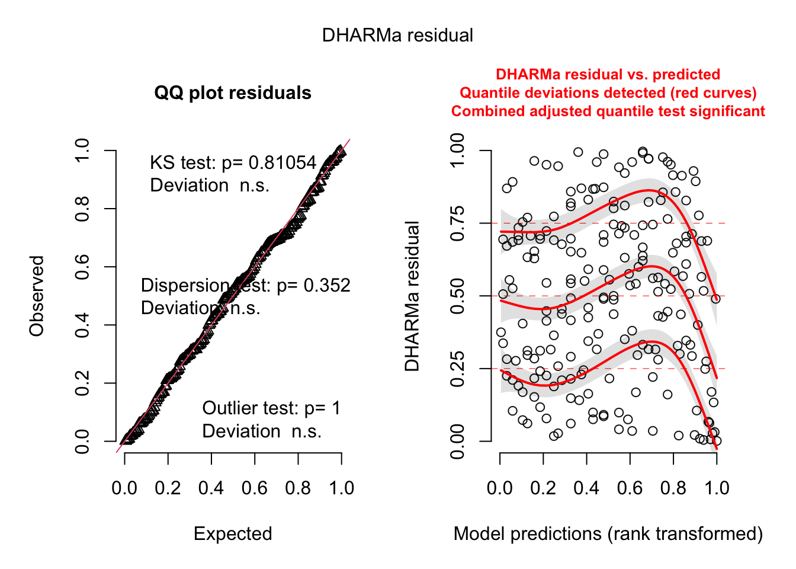
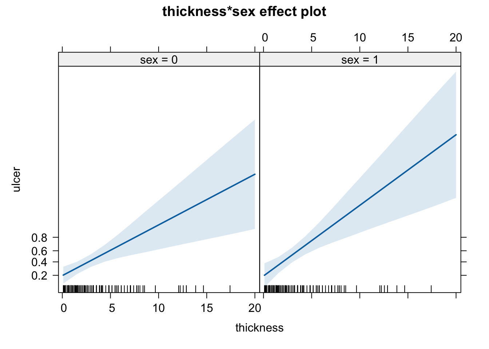
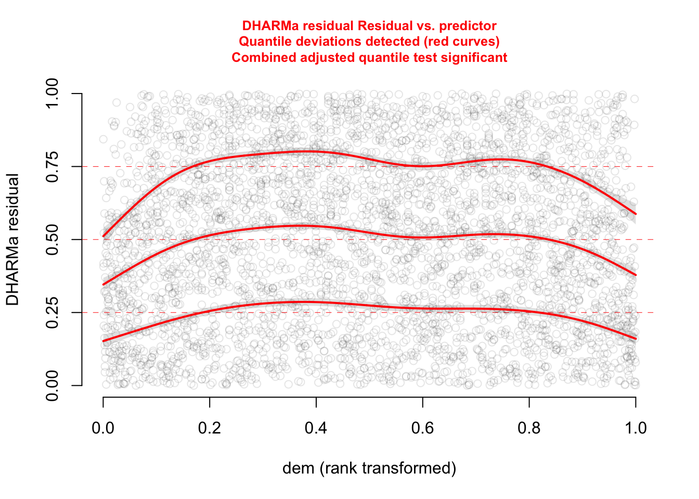

library(boot)
library(DHARMa)
## This is DHARMa 0.4.7. For overview type '?DHARMa'. For recent changes, type news(package = 'DHARMa')
library(effects)
## Carregando pacotes exigidos: carData
## lattice theme set by effectsTheme()
## See ?effectsTheme for details.Exercise - GLM
In this exercise you will practice to:
- choose the correct model for your data
- interpret the model output of generalized linear models
- check the residuals using the DHARMa package
Before you start, remember to clean your global environment (if you haven’t already) using rm(list=ls()).
For your analyses, you will use the datasets nitrofen and melanoma which are both implemented in the boot package. You will also need the packages DHARMa and effects. Please install and load these packages, if you haven’t done this yet:
Analyzing the nitrofen dataset
The Ministry of Agriculture has appointed your university to investigate the toxicity of the herbicide nitrofen on the fertility of the waterflea species Ceriodaphnia dubia in order to asses the implications of the herbicide for ecosystems.
In an experiment conducted by your fellow researchers, the offspring of the waterflea species Ceriodaphnia dubia were counted as a function of different concentrations of the herbicide. Your job is to do the analysis.
Question
Carry out the following tasks:
- Convert the variable
concinto a factor. - Fit a suitable model for the relationship between total amount of offspring (
total) and nitrofen concentration (conc). - Test for overdispersion.
- Interpret and plot the effect.
- Test for the overall effect of nitrofen concentration.
You may need the following functions:
str()as.factor()glm()summary()testDispersion()plot()allEffects()anova(..., test = "Chisq")
Use your results to answer the following questions:
1.You analyzed the response of Ceriodaphnia dubia to different concentrations of the herbicide nitrofen. Looking at your results, which of the following statements is correct? (Several anwers are correct)
2. How do you test for the overall significance of concentration on the total amount of offspring? Perform the respective test to check whether the variable conc as a whole has an effect on the total amount of offspring. How many asteriks are displayed for significance?
# prepare data
nitrofen$conc <- as.factor(nitrofen$conc) # change variable conc to a factor
# plot the relation that we want to fit
plot(total ~ conc, nitrofen)
# Fit a suitable model for the relationship between total amount of offspring (total) and nitrofen concentration (conc):
fit <- glm(total ~ conc, family = "poisson", data=nitrofen)
summary(fit)
##
## Call:
## glm(formula = total ~ conc, family = "poisson", data = nitrofen)
##
## Coefficients:
## Estimate Std. Error z value Pr(>|z|)
## (Intercept) 3.44681 0.05643 61.078 < 2e-16 ***
## conc80 0.00318 0.07974 0.040 0.968
## conc160 -0.10395 0.08196 -1.268 0.205
## conc235 -0.60190 0.09486 -6.345 2.22e-10 ***
## conc310 -1.65505 0.14089 -11.747 < 2e-16 ***
## ---
## Signif. codes: 0 '***' 0.001 '**' 0.01 '*' 0.05 '.' 0.1 ' ' 1
##
## (Dispersion parameter for poisson family taken to be 1)
##
## Null deviance: 312.484 on 49 degrees of freedom
## Residual deviance: 50.719 on 45 degrees of freedom
## AIC: 297.81
##
## Number of Fisher Scoring iterations: 5
# test for overdispersion
testDispersion(fit)##
## DHARMa nonparametric dispersion test via sd of residuals fitted vs.
## simulated
##
## data: simulationOutput
## dispersion = 0.62249, p-value = 0.048
## alternative hypothesis: two.sided
# plot effect
plot(allEffects(fit))
# log link to calculate predicted values at the response scale:
# predicted response = exp(Intercept + Estimate * predictor)
exp(3.44681) # or
## [1] 31.40007
exp(coef(fit)[1])
## (Intercept)
## 31.4
# Test for the overall effect of *conc* on the total number of offspring
anova(fit, test = "Chisq")
## Analysis of Deviance Table
##
## Model: poisson, link: log
##
## Response: total
##
## Terms added sequentially (first to last)
##
##
## Df Deviance Resid. Df Resid. Dev Pr(>Chi)
## NULL 49 312.484
## conc 4 261.76 45 50.719 < 2.2e-16 ***
## ---
## Signif. codes: 0 '***' 0.001 '**' 0.01 '*' 0.05 '.' 0.1 ' ' 1Analyzing the melanoma dataset
In the following, you will investigate the melanoma dataset provided by the University Hospital of Odense, Denmark. The data are of patients with malignant melanomas. You can find a more detailed description in the help of melanoma. The question you want to investigate is whether the occurrence of ulceration (ulcer, yes = 1, no = 0) is related to the thickness of the tumor (thickness in mm) and the sex of the patient (sex, male = 1, female = 0) and the interaction of the two.
Question
Carry out the following tasks:
- Fit an appropriate model to answer the research question.
- Check the model residuals.
- Interpret and plot all effects including an analysis of the deviance.
You may need the following functions:
str()glm()summary()anova()simulateResiduals()plot()allEffects()
Use your results to answer the following questions:
1. Let’s move to the melanoma dataset: Assuming you chose the correct distribution, which type of regression did you use for the analysis?
3. You have checked the residuals of your model. Which of the following patterns and conclusions apply? (Several answers are correct)
- There remains a significant pattern between the residuals and the fitted values. –> You can see this in the right part of the DHARMa residual plot.
- An additional quadratic term for thickness could help to improve the model. –> Try it out!
- The residuals deviate from the expected distribution. –> You can see this in the left part of the DHARMa residual plot.
- The model is overdispersed. –> Only poisson or binomial k/n models can be overdispersed!
# get the data
dat <- melanoma
# Fit an appropriate model to answer the research question.
dat$sex <- as.factor(dat$sex) # change variable sex to factor (this is optional, not necessary with binary values 0/1)
fit <- glm(ulcer ~ thickness * sex, family = "binomial", data=dat)
# Check residuals
res <- simulateResiduals(fit, n = 500)
plot(res)
# model interpretation
summary(fit)
##
## Call:
## glm(formula = ulcer ~ thickness * sex, family = "binomial", data = dat)
##
## Coefficients:
## Estimate Std. Error z value Pr(>|z|)
## (Intercept) -1.40642 0.31902 -4.409 1.04e-05 ***
## thickness 0.36927 0.11368 3.248 0.00116 **
## sex1 -0.02579 0.55535 -0.046 0.96296
## thickness:sex1 0.14527 0.17656 0.823 0.41064
## ---
## Signif. codes: 0 '***' 0.001 '**' 0.01 '*' 0.05 '.' 0.1 ' ' 1
##
## (Dispersion parameter for binomial family taken to be 1)
##
## Null deviance: 281.13 on 204 degrees of freedom
## Residual deviance: 234.04 on 201 degrees of freedom
## AIC: 242.04
##
## Number of Fisher Scoring iterations: 5
anova(fit, test = "Chisq")
## Analysis of Deviance Table
##
## Model: binomial, link: logit
##
## Response: ulcer
##
## Terms added sequentially (first to last)
##
##
## Df Deviance Resid. Df Resid. Dev Pr(>Chi)
## NULL 204 281.13
## thickness 1 45.374 203 235.76 1.628e-11 ***
## sex 1 1.039 202 234.72 0.3080
## thickness:sex 1 0.681 201 234.04 0.4094
## ---
## Signif. codes: 0 '***' 0.001 '**' 0.01 '*' 0.05 '.' 0.1 ' ' 1
# Calculate Pseudo R2: 1 - Residual deviance / Null deviance
1 - 234.04/281.13 # Pseudo R2 of model
## [1] 0.1675026
# plot effects
plot(allEffects(fit))
As the residuals look quite suspicious and all quantile regressions significantly deviate, we can try to improve the model with a quadratic term for thickness.
fit <- glm(ulcer ~ thickness * sex + I(thickness^2), family = "binomial", data=dat)
summary(fit)
##
## Call:
## glm(formula = ulcer ~ thickness * sex + I(thickness^2), family = "binomial",
## data = dat)
##
## Coefficients:
## Estimate Std. Error z value Pr(>|z|)
## (Intercept) -2.466019 0.411511 -5.993 2.07e-09 ***
## thickness 1.066836 0.193715 5.507 3.65e-08 ***
## sex1 0.236510 0.518545 0.456 0.648
## I(thickness^2) -0.057746 0.012766 -4.523 6.09e-06 ***
## thickness:sex1 -0.009476 0.133618 -0.071 0.943
## ---
## Signif. codes: 0 '***' 0.001 '**' 0.01 '*' 0.05 '.' 0.1 ' ' 1
##
## (Dispersion parameter for binomial family taken to be 1)
##
## Null deviance: 281.13 on 204 degrees of freedom
## Residual deviance: 214.05 on 200 degrees of freedom
## AIC: 224.05
##
## Number of Fisher Scoring iterations: 4
res <- simulateResiduals(fit)
plot(res)
# plot effects
plot(allEffects(fit))The quadratic term solves the problem of the residuals. The effects plots look quite different. There seems to be a maximum of ulcer around a thickness of 10 that we would have missed without the quadratic term.
Analyzing Elk data
Download the elk_data from GRIPS and import the file using the load( ) function.
RData is a R specific data type. You can save any R object by running save(object, file "filename.RData")
Example - Elk Data
You will be given a data set of habitat use of Elks in Canada. Measured is the presence of Elks (0/1), and a number of other predictors. Description of variables:
dist_roads- distance of the location to the next roadNDVI- normalized difference vegetation index, essentially greeness of vegetation on the siteruggednessof the terraindem- digital eleveation model = elevation above sea levelpresence- presence of the elkhabitat- open or forest
Perform either:
- A predictive analysis, i.e. a model to predict where Elks can be found.
- A causal analysis, trying to understand the effect of roads on Elk presence.
Hints:
- Hypothesis: presence ~ dist_roads
- What are potential confounders? How can you see if a variable is a confounder?
A. Predictive analysis
load(file = "data/elk_data.RData")
library(MASS)
fit <- glm(presence ~ dist_roads + dem + ruggedness, data = elk_data, family = "binomial")
predictive_model = MASS::stepAIC(fit, direction = "both")
## Start: AIC=5109.03
## presence ~ dist_roads + dem + ruggedness
##
## Df Deviance AIC
## - dist_roads 1 5101.9 5107.9
## <none> 5101.0 5109.0
## - ruggedness 1 5171.4 5177.4
## - dem 1 5241.3 5247.3
##
## Step: AIC=5107.94
## presence ~ dem + ruggedness
##
## Df Deviance AIC
## <none> 5101.9 5107.9
## + dist_roads 1 5101.0 5109.0
## - ruggedness 1 5172.0 5176.0
## - dem 1 5324.8 5328.8
summary(predictive_model)
##
## Call:
## glm(formula = presence ~ dem + ruggedness, family = "binomial",
## data = elk_data)
##
## Coefficients:
## Estimate Std. Error z value Pr(>|z|)
## (Intercept) -6.7890658 0.4917287 -13.807 <2e-16 ***
## dem 0.0042951 0.0002994 14.343 <2e-16 ***
## ruggedness -0.0289100 0.0035076 -8.242 <2e-16 ***
## ---
## Signif. codes: 0 '***' 0.001 '**' 0.01 '*' 0.05 '.' 0.1 ' ' 1
##
## (Dispersion parameter for binomial family taken to be 1)
##
## Null deviance: 5334.5 on 3847 degrees of freedom
## Residual deviance: 5101.9 on 3845 degrees of freedom
## AIC: 5107.9
##
## Number of Fisher Scoring iterations: 4B. Causal analysis
The predictive model has actually dropped the variable of interest (distance to roads) which shows the risks of tools that select for the best predictive model such as AIC selection: Collinear variables that we need to adjust our effects, are often dropped.
For the causal model, we really need to think about the causal relationships between the variables:
We are interested in the effect of dist_roads on presence:
summary(glm(presence ~ dist_roads, data = elk_data, family = "binomial"))
##
## Call:
## glm(formula = presence ~ dist_roads, family = "binomial", data = elk_data)
##
## Coefficients:
## Estimate Std. Error z value Pr(>|z|)
## (Intercept) -4.101e-01 6.026e-02 -6.806 1.0e-11 ***
## dist_roads 3.204e-04 3.977e-05 8.056 7.9e-16 ***
## ---
## Signif. codes: 0 '***' 0.001 '**' 0.01 '*' 0.05 '.' 0.1 ' ' 1
##
## (Dispersion parameter for binomial family taken to be 1)
##
## Null deviance: 5334.5 on 3847 degrees of freedom
## Residual deviance: 5268.1 on 3846 degrees of freedom
## AIC: 5272.1
##
## Number of Fisher Scoring iterations: 4Positive effect of dist_roads on elk, or in other words, more elks closer to the roads? Does that make sense? No, we expect a negative effect!
Altitude (dem) and the ruggedness probably affect both variables, presence and dist_roads, and thus they should be considered as confounders:
fit = glm(presence ~ dist_roads+ dem + ruggedness, data = elk_data, family = "binomial")The effect of dist_roads is now negative!
Let’s check the residuals:
library(DHARMa)
res <- simulateResiduals(fit, plot = TRUE)plot(res, quantreg = TRUE)plotResiduals(res, form = elk_data$dem, quantreg = TRUE)
plotResiduals(res, form = elk_data$ruggedness, quantreg = TRUE)The functional forms of our confounders are not perfect.
Since we are not really interested in them, a cool trick is to use a GAM (generalized addictive model) which automatically adjusts the functional for of the fitted curve to flexibly take care of the confounders. Our main predictor dist_roads is still modelled as a linear effect.
library(mgcv)
## Carregando pacotes exigidos: nlme
## This is mgcv 1.9-1. For overview type 'help("mgcv-package")'.
fit2 <- gam(presence ~ dist_roads + s(dem) + s(ruggedness), data = elk_data, family = "binomial")
summary(fit2)
##
## Family: binomial
## Link function: logit
##
## Formula:
## presence ~ dist_roads + s(dem) + s(ruggedness)
##
## Parametric coefficients:
## Estimate Std. Error z value Pr(>|z|)
## (Intercept) 1.783e-01 8.229e-02 2.167 0.03025 *
## dist_roads -1.798e-04 5.771e-05 -3.115 0.00184 **
## ---
## Signif. codes: 0 '***' 0.001 '**' 0.01 '*' 0.05 '.' 0.1 ' ' 1
##
## Approximate significance of smooth terms:
## edf Ref.df Chi.sq p-value
## s(dem) 8.283 8.845 220.3 <2e-16 ***
## s(ruggedness) 8.510 8.918 128.3 <2e-16 ***
## ---
## Signif. codes: 0 '***' 0.001 '**' 0.01 '*' 0.05 '.' 0.1 ' ' 1
##
## R-sq.(adj) = 0.114 Deviance explained = 9.27%
## UBRE = 0.26754 Scale est. = 1 n = 3848
plot(fit2)Let’s take another look at the residual plots, in particular for the confounders.
res <- simulateResiduals(fit2, plot = TRUE)
## Registered S3 method overwritten by 'GGally':
## method from
## +.gg ggplot2
## Registered S3 method overwritten by 'mgcViz':
## method from
## +.gg GGallyplot(res, quantreg = TRUE)plotResiduals(res, form = elk_data$dem, quantreg = TRUE)plotResiduals(res, form = elk_data$ruggedness, quantreg = TRUE)Now, everything looks perfect